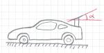
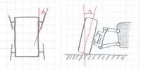
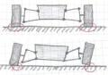

5.4 Car PropertiesIntroductionThis section will introduce you in the format of the setup files, the settings constraints and the most important properties (parameters, settings) of the TORCS cars. If you look up the default settings files there are many more settings available than presented here, but most of them you can't change (e. g. the engine). I want to mention here that you can set all these properties up without a setup file, so you are able to compute settings at the startup of the race. Setup File FormatThe setup files are XML files. The structure is very simple, you will see just sections, subsections and attributes. Numerical attributes are usually defined with a name, a unit and the boundaries which define the range of the allowed values. Settings ConstraintsThe car belongs to a car category, which defines some constraints like the range of the allowed size, engine power, weight and more. The car model settings defines then the values for its specific car and must not conflict with the constraints from the car category. After that we will load our own setup files which must not violate the constraints from the above definitions. PropertiesYou can find all mentioned properties in the file 0/default.xml (relative to the bt directory). Initial Fuel <section name="Car">
<attnum name="initial fuel" unit="l" min="1.0" max="100.0" val="100.0"/>
</section>
The amount of initial fuel for the setup. Perhaps you want to compute that setting at startup instead of putting it into a setup file. Feel free to improve it. For qualifying and short races you want just the minimal amount of fuel you need, for longer races it will depend on your strategy (but we need to implement pit stops first). |
Spoilers <section name="Rear Wing">
<attnum name="angle" unit="deg" min="0" max="30" val="10"/>
</section>
 This section defines the angle of attack of the rear spoiler relative to the floor. When you increase the angle of attack you get more downforce and drag. If the race track has very long straights and just a few narrow turns you want a small angle of attack to reduce the drag. If there are many turns you want a big angle of attack to increase the downforce, so you can drive faster through the turns. For some cars there is also a front wing section available. The front spoiler helps to avoid understeering if you set up the rear spoiler with a high angle of attack. |
Gearbox <section name="Gearbox">
<section name="gears">
<section name="r">
<attnum name="ratio" min="-3" max="0" val="-2.0"/>
</section>
... </section>
</section>
The gearbox section defines the properties of the gears. The "r" subsection specifies the ratio of the reverse gear. The reverse gear ratio needs to be negative. The wheel velocity is proportional to the engine rpm divided by the ratios, so for the highest gear you need the least value. For quick starts you need a very high value for the first gear. Differential <section name="Rear Differential">
<attstr name="type" in="SPOOL,FREE,LIMITED SLIP" val="LIMITED SLIP"/>
</section>
Here the differential type is defined. The "Free" type distributes the power without any control, so it is the classic differential you can find in most of the normal cars. The "Free" differential is a good choice for tracks with high friction and not many bumps for the qualifying. When you leave the track with the "Free" differential you perhaps get stuck in the grass, sand or dirt. The "Limited Slip" differential allows just a certain amount of speed difference between the left and right wheel. This allows you to come back to the track from grass and dirt. This is most often the best setting for races. The "Spool" setting links together the right and the left wheel, so it's usually a bad setting for all turns. It could make sense on a very bumpy road or for offroad races. Brakes <section name="Brake System">
<attnum name="front-rear brake repartition" min="0.3" max="0.7" val="0.52"/>
<attnum name="max pressure" unit="kPa" min="100" max="150000" val="11000"/>
</section>
The front-rear brake repartition defines how to distribute the pressure in the brake system. If the value is 0.0 all pressure goes to the rear brakes, if it is 1.0 all pressure hits the front brakes. The max pressure setting defines the pressure for applying full brakes. |
Wheels <section name="Front Right Wheel">
<attnum name="ride height" unit="mm" min="100" max="200" val="100"/>
<attnum name="toe" unit="deg" min="-5" max="5" val="0"/>
<attnum name="camber" min="-5" max="0" unit="deg" val="0"/>
</section>
 The ride height setting defines the initial distance of the cars floor to the track. When you decrease the ride height the downforce increases because of the ground effect, but you cars floor may hit the track. With toe (on the left on the sketch) you can define the initial angle of the wheel to the car. You can improve the stability or the response to steer commands with these settings. Camber (on the right on the sketch) defines the angle of the wheel to the track. At the moment it increases simply the adherence on the track in the simulation when you decrease the angle (toward negative values). |
Anti Roll Bar <section name="Rear Anti-Roll Bar">
<attnum name="spring" unit="lbs/in" min="0" max="5000" val="0"/>
<attnum name="suspension course" unit="m" min="0" max="0.2" val="0.2"/>
<attnum name="bellcrank" min="1" max="5" val="1.8"/>
</section>
 The anti-roll bars prevents the car body from rolling (e. g. in fast turns). When the car body rolls (on the bottom of the sketch) the tire contact patch becomes smaller and the grip drops down. The spring setting defines how strong the anti-roll bar is linked. With a high bellcrank value you can increase the strength of the link further.
|
Suspension <section name="Front Right Suspension">
<attnum name="spring" unit="lbs/in" min="0" max="10000" val="2500"/>
<attnum name="suspension course" unit="m" min="0" max="0.2" val="0.2"/>
<attnum name="bellcrank" min="1" max="5" val="2"/>
<attnum name="packers" unit="mm" min="0" max="10" val="0"/>
<attnum name="slow bump" unit="lbs/in/s" min="0" max="1000" val="80"/>
<attnum name="slow rebound" unit="lbs/in/s" min="0" max="1000" val="80"/>
<attnum name="fast bump" unit="lbs/in/s" min="0" max="1000" val="100"/>
<attnum name="fast rebound" unit="lbs/in/s" min="0" max="1000" val="100"/>
</section>
The spring setting defines how stiff the spring is. The suspension course defines the distance which the suspension can move. With the bellcrank you can make the whole suspension system more stiff (higher values) or soft (lower values). The packers limit the suspension movement. You need this if you want a soft setup and avoiding the car floor hitting the track on fast track sections. Slow bump and rebound allow you to set up the damping of low frequency oscillations, e. g. caused by braking and steering. Fast bump and rebound are for damping high frequency oscillations, e. g. caused by bumps on the track or if you hit the curbs. Summary
|
|
Back |
Custom properties. |